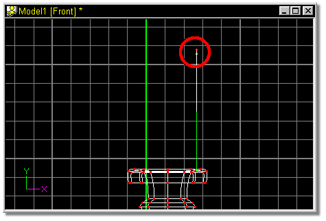
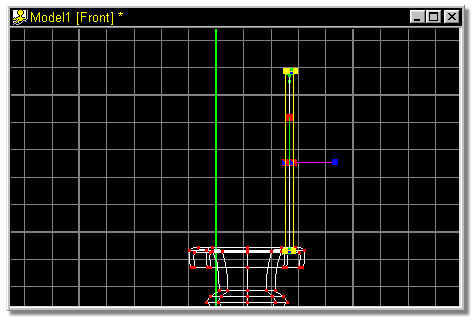

The point that was just added should still be highlighted, if it is not, click
on the control point that was just added (circled in red in figure 13).

Figure 13
Press the “/” key to Group Connected. Then select the Scale Manipulator.
Your screen should look similar to figure 14.

Figure 14